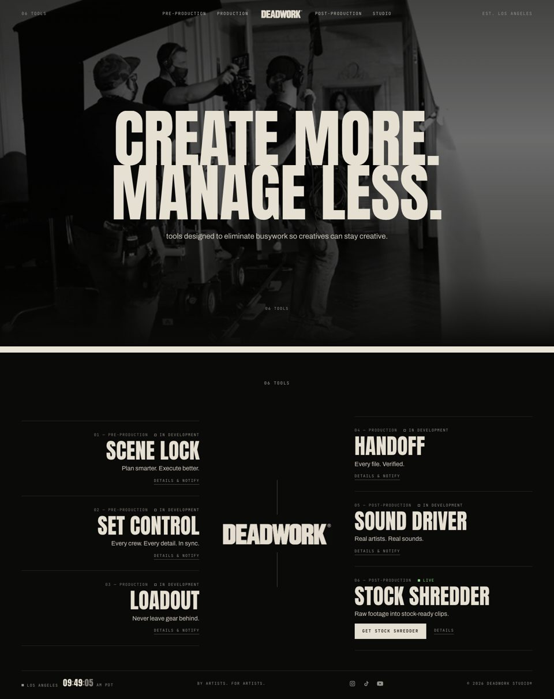
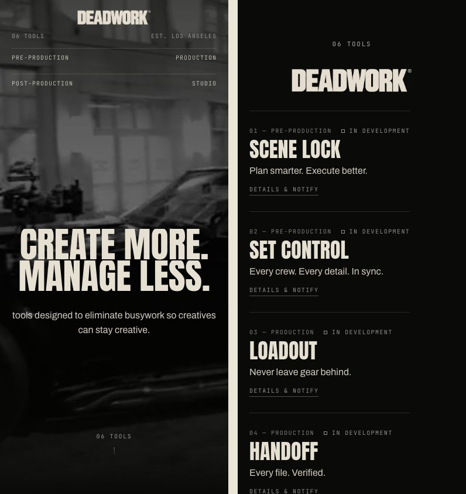

Option 01
Refined Original
Apple + Fear of God + Lens Distortions
- Philosophy
- The current homepage at its best. Same centered statement over the film, with better proportions and a quieter rhythm.
- What changed
- Tighter headline leading with a clean reveal. The tools get their own screen, set as the original 3 · DEADWORK · 3 composition: Scene Lock, Set Control and Loadout on the left, the wordmark in the center, Handoff, Sound Driver and Stock Shredder on the right. The clock in the footer is set in Anton instead of being a line of small print.
- What stayed
- Layout, masthead, film, type, color, footer order.
- Why DEADWORK
- It's the safest step: anyone who knows the site still recognizes it, and the six tools finally get a proper home.
- Tradeoffs
- The least surprising of the five. Pairing tools across the center line means Handoff (Production) sits on the post side, same as the live nav.